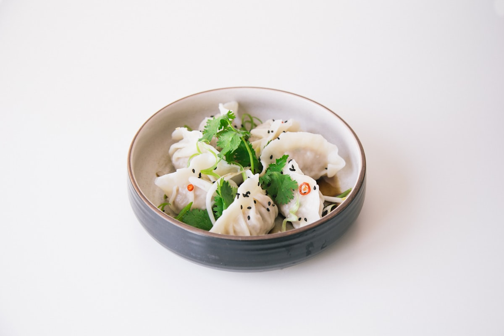

Bún Thịt Nướng Chả Giò
Char-grilled lemongrass pork strips alongside crispy pork and taro egg rolls over chilled rice noodles, fresh greens, crushed peanuts, and scallion oil.
Fresh rice noodles tossed with herbs, crushed peanuts, scallion oil, and savory flame-grilled proteins. The perfect balance of crisp, herbal, and savory.

Vietnamese Bún (rice vermicelli) bowls offer a vibrant alternative to hot soups. Served at room temperature, every bowl is layered carefully to deliver contrasting textures and deep aromatics:
Satisfying, balanced meals accompanied by our sweet and tangy house dressings.
Char-grilled lemongrass pork strips alongside crispy pork and taro egg rolls over chilled rice noodles, fresh greens, crushed peanuts, and scallion oil.
Marinated char-grilled shrimp and savory pork slices atop tender vermicelli with mint, cucumber, pickled vegetables, and house fish sauce.
Crispy vegetarian taro rolls and seared seasoned tofu over rice noodles with herbs, peanuts, and vegetarian soy vinaigrette.

For guests seeking a hearty, warm grain meal, our Cơm plates are centered around fragrant jasmine rice served alongside marinated meats seared to order: